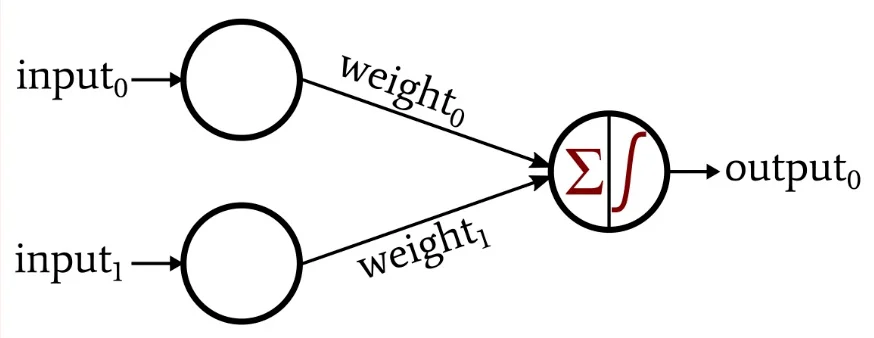

Interactive Simulation
This is a neural network that uses a truth table as training data. After it has trained, it will converge on an algorithm that will accuratly implement the desired boolean algebra function.
| A | B | f | NN |
|---|---|---|---|
| 0 | 0 | . . . | |
| 0 | 1 |
. . . | |
1 |
0 | . . . | |
1 |
1 |
. . . |
Click on the outputs in the 'f' column to change them.
The Single Layer Perceptron
The perceptron is an artifical neuron invented in the 60s which can be used to solve binary classification problems (classifying data into two types). In the case of the truth table above, the input (A, B) is classified to be either true or false.
 Photo by allaboutcircuits.com
The output of the perceptron is a weighted sum of the inputs plus a bias value:
a = (Σwx) + b
Where a is the activation, w is the weight, x is the input, and b is the bias.
Code
Here is the code I wrote for this project. You can also view the github repository here.